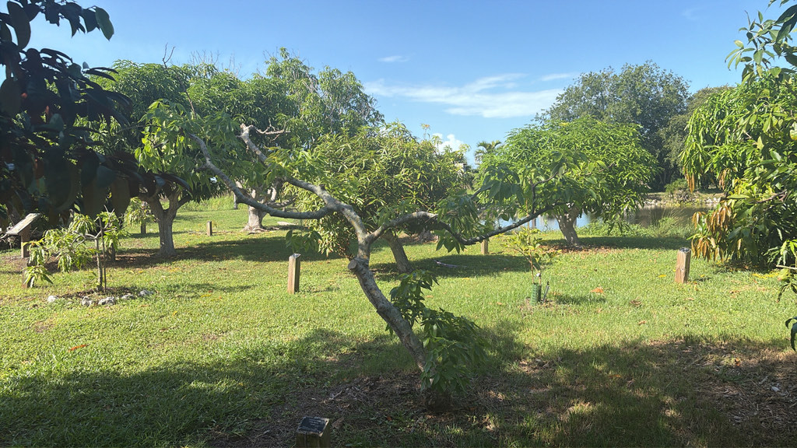

- The genus name Casimiroa honors Casimiro Gómez, an Otomi man from Hidalgo, Mexico, who died fighting in Mexico's war of independence. It is one of the very few plant genera named not for a European botanist or nobleman but for an indigenous freedom fighter — a genuinely rare gesture in a discipline with a long colonial naming tradition.
- The Aztecs called this tree cochitzapotl — 'sleep-sapote' — because the fruit has a mild sedative effect. The leaves and bark are stronger still: in traditional Mexican herbalism, a tea brewed from the leaves was used as a soporific and tranquilizer. The seeds, though, are a different matter entirely and should never be eaten.
- White sapote is a member of the citrus family, Rutaceae — and it shows. The Giant Swallowtail butterfly, whose caterpillar (called the 'orangedog') is a familiar pest on backyard citrus throughout Florida, will also lay eggs on white sapote. The tree is an accepted stand-in for citrus as a larval host.
- Despite a flavor often described as a cross between banana, peach, and vanilla custard, white sapote fruit has almost no commercial presence — its skin is paper-thin, it bruises at a touch, and it turns to mush within days of ripening. It is strictly a pick-it-and-eat-it fruit, which is exactly why you rarely see it in a store.
White sapote is native to the highlands of eastern Mexico and Central America, ranging south to Costa Rica. In its home range it grows at elevations from roughly 600 to 3,000 meters — a cloud-forest and highland fruit tree, not a lowland tropical one. That cool-subtropical origin is why it adapts so well to Florida's climate.
UF/IFAS records the species arriving in the United States around 1810, making it one of the earliest subtropical fruit introductions to this country. Small orchards were established in California and Florida, and the tree spread gradually through the specialty-fruit community.
It has never become a commercial crop — its fragile fruit defeats large-scale harvest and shipping — but it remains a prized specimen in home gardens and botanical collections throughout USDA Zones 9b to 11.
- Despite sharing a family with limes, grapefruits, and kumquats, white sapote produces nothing that looks or tastes like citrus. The fruit is a smooth, thin-skinned drupe two to four inches across, ripening from green to pale yellow, with creamy white pulp and a custard sweetness.
- Flavors shift noticeably by variety and growing conditions — some trees deliver vanilla-peach, others lean toward banana or even a mild bitterness near the skin.
- The tree itself is handsome and substantial, starting upright when young and then developing a broad spreading canopy with arching, somewhat drooping branches and glossy palmately compound leaves. Mature trees can reach 50 feet or more, though Florida specimens in cultivation typically stay in the 20- to 40-foot range.
- The bark is distinctive: pale gray-brown and notably warty, often mottled with algae and lichen.
- Here is the Jekyll-and-Hyde character of white sapote. The ripe pulp is safe and widely enjoyed — that custard sweetness is entirely harmless.
- But the same tree hides real hazards: the seeds contain a glucoside called casimirosine with genuine sedative and potentially toxic activity, and the leaves and bark carry the same compound at higher concentrations, enough that a tea brewed from the leaves causes measurable drowsiness. The Aztec name cochitzapotl, meaning 'sleep-producing sapote,' was not a marketing slogan.
- Modern pharmacological research has also confirmed cardiovascular and anticonvulsant properties in these extracts — a reminder that this is a chemically complex plant, not simply a pleasant backyard fruit tree.
The small greenish-yellow flower clusters attract bees and other pollinating insects — a useful trait in a garden setting, even if the blooms are not showy. The fruit, once ripe and fallen, is taken by birds and mammals. In Florida that means a range of opportunistic feeders, from mockingbirds to raccoons, will investigate fallen fruit.
White sapote earns an interesting place in the butterfly garden as a member of the citrus family. UF/IFAS documents it as a larval host for the Giant Swallowtail (Papilio cresphontes), Florida's largest butterfly. The caterpillar — the so-called 'orangedog,' familiar to anyone who grows citrus — mimics a bird dropping in its early instars and feeds on the foliage.
Finding one on this tree is a genuine garden moment worth looking for.
Small, greenish-yellow, five-petaled, and produced in open clusters of 20 to 80 flowers at the branch tips and leaf axils. Individual flowers are about half an inch across and not fragrant. Many cultivated varieties produce only functionally female flowers and require a pollen-producing tree nearby for good fruit set; some varieties are self-sufficient. Bees are the primary pollinators.
A smooth, thin-skinned drupe two to four inches in diameter, ripening from green to pale yellow-green or yellow. The flesh is white to cream, soft, and custard-like, surrounding one to five large, pale seeds. The seeds are toxic and must not be eaten. Ripe fruit detaches easily and does not keep — once fully ripe it softens within a day or two.
Alternate, palmately compound, typically with five lanceolate leaflets six to twelve centimeters long on a long central stalk — the hand-and-fingers shape is distinctive. Surfaces are glossy dark green above; new growth often flushes reddish. The tree is evergreen but may drop leaves briefly under cold or drought stress.
The tree starts with an upright form, then develops spreading, somewhat drooping branches and a broad crown. Bark is pale gray-brown and distinctively warty or rough-textured, often colonized by lichens and algae that give it a mottled, grayish-green patina. The root system can be extensive — mature trees develop a taproot and wide-spreading lateral roots.
Seed-grown trees are highly variable and may take seven or more years to fruit. Grafted or budded trees on seedling rootstock are standard for fruit production, bringing bearing age down to two or three years and locking in desirable cultivar traits. Seed viability drops quickly — seeds should be sown within a few weeks of harvest.
The leaf shape is the easiest starting point: look for the palmate compound arrangement — three to five long, glossy leaflets radiating from a single stalk like fingers from a palm. The bark is worth a close look too, notably rough and warty for a fruit tree, often mottled gray-green with lichen.
If the tree is fruiting, scan for the smooth round drupes, green to pale yellow, hanging singly or in small clusters; they look a bit like a fat lime at first glance. Check the undersides of leaves for Giant Swallowtail eggs or the bird-dropping caterpillars — they are there more often than people realize.
The seeds are the most serious hazard: multiple authoritative sources describe them as potentially fatally toxic if eaten raw, to both people and animals. Always remove and discard seeds before eating the fruit. The leaves and bark follow closely — they contain casimirosine, a glucoside with real sedative activity; a tea brewed from the leaves causes genuine drowsiness and should be avoided.
The ripe fruit pulp itself is safe and widely eaten. If dogs have access to the tree, keep fallen fruit picked up to prevent accidental seed ingestion.
White sapote is not the same plant as black sapote (Diospyros nigra, in the ebony family) or mamey sapote (Pouteria sapota, in the sapodilla family) — the name 'sapote' comes from a Nahuatl word meaning any soft, round, edible fruit and has been applied loosely across several unrelated species. The white sapote's actual relatives are citrus, rue, and prickly ash.
UF/IFAS notes that many cultivated white sapote varieties may actually be hybrids between Casimiroa edulis and the woolly-leaf white sapote, C. tetrameria, rather than pure C. edulis. For home-landscape and botanical-garden purposes the two species and their hybrids are grown and labeled interchangeably under the common name white sapote.


- © Ruby Meador (CC-BY-NC), via iNaturalist
- © Austin Sibrian (CC-BY-NC), via iNaturalist